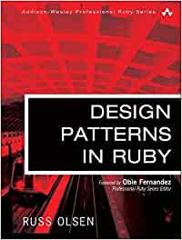

Why Should You Listen to Me?
- I’ve built a lot of complicated software…
- …and have been lucky enough to hang out with some very smart people
The Most Important Thing
Computer scientists aren't taught how to design software
- The most design-intensive “engineering” discipline there is
- But courses where students analyze and critique others’ programs are rare
- So no, you haven’t missed something obvious
1. Design after the fact
- The most important thing is to look as though you designed things (Parnas1986)
- So that the next person can understand it
- Many designers explain architecture by recapitulating history (Brown2011,Brown2012)
- Challenge and response
- Can only understand why it does what it does by understanding the problem it was designed to solve
1. Design after the fact
- Refactoring is the process of reorganizing or rewriting code without changing behavior
- By which we mean “high-level behavior” because of course if you look closely enough…
- Fowler2018 describes common refactoring moves for code
- These do to code what tidying steps in a data pipeline do to data (Wickham2017):
move it toward well-understood forms (Kerievsky2004)
2. Design for cognitive capacity
- Short-term memory vs. long-term memory
- You can manage 7±2 things at a time (Miller1956)
- So design software to keep cognitive load manageable
2. Design for cognitive capacity
- Constants are easier to remember than varying values…
- …unless those values vary in predictable ways
- Keep number of parameters or variables in (mental) scope at any time below this threshold
- Pipes with strict left-to-right reading order are easier to understand than nested function calls
- Build frameworks that encourage this
Aside
- Some people say that if you need to comment your code you should have written clearer code
- That is expert blind spot at work
- Newcomers need help building a mental model of the code and problem
- And everyone needs the “why” that code alone doesn’t capture
3. Design in coherent levels
- Functions should be short, shallow, and single-purpose
- Of course, no one would argue the opposite…
- If I read a function aloud, are all the steps at the same conceptual level?
def main():
config = buildConfig(sys.argv)
state = initState(config)
while (config.currentTime < config.haltTime):
updateState(config, state)
report(config, state)
3. Design in coherent levels
- Functions should be short, shallow, and single-purpose
- Of course, no one would argue the opposite…
- If I read a function aloud, are all the steps at the same conceptual level?
def main():
config = buildConfig(sys.argv)
state = initState(config)
while (config.currentTime < config.haltTime): ##
updateState(config, state)
report(config, state)
3. Design in coherent levels
- Functions should be short, shallow, and single-purpose
- Of course, no one would argue the opposite…
- If I read a function aloud, are all the steps at the same conceptual level?
def main():
config = buildConfig(sys.argv)
state = initState(config)
while stillEvolving(config): ##
updateState(config, state)
report(config, state)
Levels
- Schon1984 and others have found that
experts jump between levels looking for concrete refutations of plans as soon as possible
- Depth-first design is therefore a good strategy if you write the hard parts first
4. Design for evolution
- Software changes over time because the problem changes and because we learn more
- A good design makes independent evolution of parts easier
- A fix here shouldn’t require changes there
- Realistically, should only require a small number of changes in limited, predictable places
- The switch to
stillEvolving in the previous slide insulates main from lower-level changes
4. Design for evolution
- Key ideas are information hiding and loose coupling
- Which manifest as interface vs. implementation
- Many of the more advanced features of programming languages exist to check this
- Examples
- Deriving classes
- Polymorphic functions
- Explicit interfaces or traits
4. Design for evolution
- Design by contract (Meyer1994) extends this idea through time
- Pre-conditions have to be true in order for the function to run
- Post-conditions are what the function guarantees will be true when it completes
- Can be used to define and verify tests
4. Design for evolution
- But wait, there’s more
- Pre-conditions can only be relaxed
- I.e., the function can take input the earlier implementation wouldn’t
- Post-conditions can only be strengthened
- I.e., the function can only produce a subset of the earlier implementation’s output
5. Group related information
- Brains use chunks to expand effective size of short-term memory
- So combine things into structures
# Bad
def enclose(x0, y0, z0, x1, y1, z1, nearness):
…
# Good
def enclose(p0, p1, nearness):
…
6. Use common patterns
- Experts have design patterns in mind when building code
- Learning them makes you a better programmer (Tichy2010)
- But also makes your code seem more familiar to others
- Examples include:
- “Most valuable” variable (Byckling2005)
- Nested loops over 2D array
- Filter-group-summarize
6. Use common patterns
- A near miss is worse than no pattern at all
for (i=0; i<a.width; i++) {
for (j=0; i<a.height; j++) {
a[i][j] = cos(abs(a[i][j]) - lemaitre(b_norm, a[j][i]))
}
}
6. Use common patterns
- A near miss is worse than no pattern at all
for (i=0; i<a.width; i++) {
for (j=0; i<a.height; j++) { ##
a[i][j] = cos(abs(a[i][j]) - lemaitre(b_norm, a[j][i]))
}
}
- The eye (literally) doesn’t see it
6. Use common patterns
- Maximize “what’s unique to this operation / boilerplate”
a = cos(abs(a) - lemaitre(b_norm, a.transpose()))
- Build frameworks that encourage this
6. Use common patterns
- Balance of abstraction and comprehension depends on how much people know
6. Use common patterns
- Patterns can be taught (but only by example)

7. Design for delivery
- Development operations (DevOps) has become a buzzword
- Like “data science” or “computational thinking”, the term is popular because people can use it to mean whatever they want
- But the core idea is a good one (Kim2016,Forsgren2018)
- The code you ship is surrounded and supported by software (and practices) that deliver that code
- Investment in automation pays off many times over
- If you design things so that they can be automated
7. Design for delivery
- Use whatever build tool your language expects
pip or conda for Pythondevtools for R- Many conflicting options for JavaScript
- Organize code and files the way your build system expects
7. Design for delivery
- Use a logging library
- A volume control is really helpful in production…
- …particularly if messages are collated…
- …but only if the messages are helpful
- And follow the rest of Taschuk2017
8. Design for testability
- Legacy code: we’re afraid to modify it because things will break unexpectedly (Feathers2004)
- Comprehensive tests make us less afraid
- But we need testable pieces in order to create tests economically
- Brings us back to pre-and-post rather than how
8. Design for testability
- How easy is it to create a fixture?
- How easy is it to invoke just the behavior we want?
- How easy is it to check the result?
- How easy is it to figure out what “right” is?
- How easy is it to delete the feature?
Test-Driven Development
- Test-driven development (TDD) is the practice of writing the tests
before writing the code
- Multiple studies have shown that it doesn’t actually improve productivity
(Fucci2016)
- But alternating rapidly between testing and coding seems to
9. Design as if code was data
- The insight on which modern computing is based
- Programs are just text files
- Style-checking tools
- Specially-formatted comments as embedded documentation
- But wait…
9. Design as if code was data
Code in memory is just another data structure
- Functions as arguments
- Functions in data structures
- Dynamic loading
- Interface vs. implementation
- Lazy evaluation in R
- Decorators in Python
9. Design as if code was data
- Count the number of values that pass a test
def count_positive(array):
number = 0
for value in array:
if value >= 0: ##
number = number + 1
return number
9. Design as if code was data
- Count the number of values that pass a test
def count_interesting(array, test):
number = 0
for value in array:
if test(value): ##
number = number + 1
return number
def is_positive(value): ##
return value >= 0 ##
count_interesting(array, is_positive) ##
The Audience Matters
- But see the discussion earlier of comprehension curves
- What is powerful in the hands of experts is spooky action-at-a-distance for novices
10. Design graphically
- Very few programmers use UML the “right” way (Petre2013)
- But almost all draw pictures to help them design (Cherubini2007)
- Blueprints versus brainstorming
10. Design graphically
10. Design graphically
- Architecture diagrams: probably the most widely used (probably because of their informality)
10. Design graphically
- Entity-relationship diagrams: widely used because they are actually helpful
10. Design graphically
- Use case maps: actions overlaid on architecture
11. Design with everyone in mind
- Fairness, privacy, and security cannot be sprinkled on afterward
- Principle of Least Privilege: what is the least information this part of the software absolutely needs to do its job?
- But that’s not all
- If users have to reset passwords frequently, they will choose insecure passwords (Smalls2021)
- Systems that email attachments train people to be vulnerable to phishing attacks
- Most social media isn’t designed with abusive ex-partners in mind…
11. Design with everyone in mind
- Accessibility can’t be sprinkled on afterward either
- Close your eyes and try to navigate your department’s website
- Or tape popsicle sticks to your fingers to simulate severe arthritis
- More important as the population ages (Johnson2017)
12. Design for contribution
- Diversity improves outcomes in fields from business to healthcare
(Gompers2018,Gomez2019)
- But you should do it because it’s the right thing to do
12. Design for contribution
- Licensing is a design issue
- You cannot use components whose licenses are incompatible with yours
- Plugin architectures make small additions more approachable
- Discoverable designs do too (Sholler2019)
Conclusion
- This is not art
- But it is beautiful
- I believe we can make bicycles too
Bibliography
[Brown2011]
Amy Brown and Greg Wilson (eds.):
The Architecture of Open Source Applications: Elegance, Evolution, and a Few Fearless Hacks.
Lulu, 2011, 978-1257638017.
[Brown2012]
Amy Brown and Greg Wilson (eds.):
The Architecture of Open Source Applications: Structure, Scale, and a Few More Fearless Hacks.
Lulu, 2012, 978-0201103427.
[Byck2005]
Pauli Byckling, Petri Gerdt, and Jorma Sajaniemi:
"Roles of Variables in Object-Oriented Programming".
2005 Conference on Object-Oriented Programming, Systems, Languages, and Applications (OOPSLA'05), 10.1145/1094855.1094972.
[Cher2007]
Mauro Cherubini, Gina Venolia, Rob DeLine, and Amy J. Ko:
"Let's Go to the Whiteboard: How and Why Software Developers Use Drawings".
2007 Conference on Human Factors in Computing Systems (CHI'07), 10.1145/1240624.1240714.
[Feathers2004]
Michael C. Feathers:
Working Effectively with Legacy Code.
Prentice-Hall, 2004, 978-0131177055.
[Forsgren2018]
Nicole Forsgren, Jez Humble, and Gene Kim:
Accelerate: Building and Scaling High Performing Technology Organizations.
IT Revolution Press, 2018, 978-1942788331.
[Fowler2018]
Martin Fowler:
Refactoring (2nd edition).
Addison-Wesley Professional, 2018, 978-0134757599.
Bibliography
[Fucci2016]
Davide Fucci, Giuseppe Scanniello, Simone Romano, Martin Shepperd, Boyce Sigweni, Fernando Uyaguari, Burak Turhan, Natalia Juristo, and Markku Oivo:
"An External Replication on the Effects of Test-driven Development Using a Multi-site Blind Analysis Approach".
ESEM'16, 10.1145/2961111.2962592.
[Gomez2019]
L.E. Gomez and Patrick Bernet:
"Diversity improves performance and outcomes".
Journal of the National Medical Association, 111(4), 2019, 10.1016/j.jnma.2019.01.006.
[Gompers2018]
Paul Gompers and Silpa Kovvali:
"The Other Diversity Dividend".
Harvard Business Review, 96(4), 2018.
[Hook2009]
D. Hook and D. Kelly:
"Testing for trustworthiness in scientific software."
Proc. 2009 ICSE Workshop on Software Engineering for Computational Science and Engineering,
2009,
10.1109/secse.2009.5069163.
[Johnson2017]
Jeff Johnson and Kate Finn:
Designing User Interfaces for an Aging Population: Towards Universal Design.
Morgan Kaufmann, 2017, 978-0128044674.
[Kanewala2014]
U. Kanewala and JM Bieman: "Testing scientific software: A systematic literature review."
Information and Software Technology. 56(10), 2014, 10.1016/j.infsof.2014.05.006.
[Kerievsky2004]
Joshua Kerievsky:
Refactoring to Patterns.
Addison-Wesley Professional, 2004, 978-0321213358.
Bibliography
[Kim2016]
Gene Kim, Patrick Debois, John Willis, and Jez Humble:
The DevOps Handbook.
IT Revolution Press, 2016, 978-1942788003.
[Meyer1994]
Bertrand Meyer:
Object-Oriented Software Construction.
Prentice-Hall, 1994, 978-0136290490.
[Miller1956]
George A. Miller:
"The Magical Number Seven, Plus or Minus Two: Some Limits on Our Capacity for Processing Information".
Psychological Review, 63(2), 1956, 10.1037/h0043158.
[Parnas1986]
David Lorge Parnas and Paul C. Clements:
"A Rational Design Process: How and Why to Fake It".
IEEE Transactions on Software Engineering, SE-12(2), 1986, 10.1109/tse.1986.6312940.
[Petre2013]
Marian Petre:
"UML in practice".
Proc. ICSE'13.
[Scanlan1989]
David A. Scanlan:
"Structured Flowcharts Outperform Pseudocode: An Experimental Comparison".
IEEE Software, 6(5), 1989, 10.1109/52.35587.
[Schon1984]
Donald A. Schon:
The Reflective Practitioner: How Professionals Think in Action.
Basic Books, 1984, 978-0465068784.
[Sholler2019]
Dan Sholler, Igor Steinmacher, Denae Ford, Mara Averick, Mike Hoye, and Greg Wilson:
"Ten simple rules for helping newcomers become contributors to open projects".
PLOS Computational Biology, 15(9), 2019, 10.1371/journal.pcbi.1007296.
Bibliography
[Smalls2021]
Danielle Smalls and Greg Wilson: "Ten quick tips for staying safe online."
PLoS Computational Biology, 17(3), 2021, 10.1371/journal.pcbi.1008563.
[Taschuk2017]
Morgan Taschuk and Greg Wilson:
"Ten simple rules for making research software more robust."
PLoS Computational Biology, 13(4), 2017, 10.1371/journal.pcbi.1005412.
[Tichy2010]
Walter Tichy:
"The Evidence for Design Patterns".
In
Andy Oram and Greg Wilson (eds.):
Making Software.
O'Reilly, 2010, 978-0596808327.
[Wickham2017]
Hadley Wickham and Garrett Grolemund:
R for Data Science: Import, Tidy, Transform, Visualize, and Model Data.
O'Reilly, 2017, 978-1491910399.